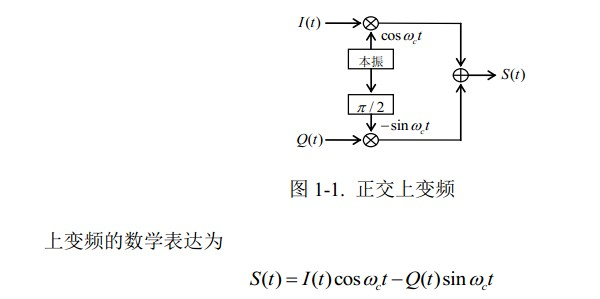
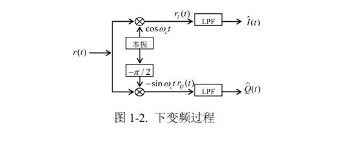
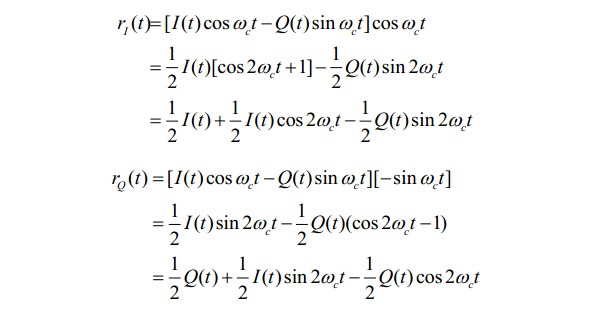
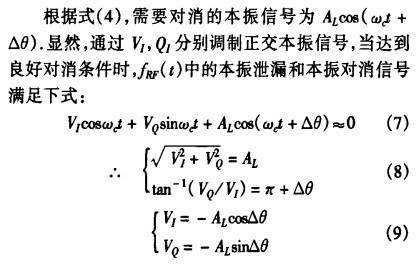

直接正交变频技术是实现无线通信收发信机小型化、单片化的关键技术之一
该技术还可以用于实现单边带的调制与多载波多模式通信。
上下变频的图示：



参考资料：直接正交上变频调制器的镜频抑制与本振泄漏对消技术研究
直接正交变频技术对于基带信号和本振信号的幅相平衡性要求很高： 幅相的不平衡将会导致变频器的镜频干扰抑制能力、发射机的邻道功率抑制比 ACPR 下降
同时，因为电路中不可避免地存在串扰、辐射、直流偏移调制等多种问题引起的本振泄漏，且有用信号和泄漏的本振信号在品坡上靠得很近，无法利用滤波器滤除。
本振泄漏信号一方面会降低发射机的效率，另一方面在接收端可能会导致接收机直流工作点的偏移，输出较大的直流偏移，容易引起分线性失真，甚至出现饱和阻塞现象。
- 仿真和测量结果表明，奇数阶谐波对正交误差的影响比偶数阶谐波更大。为了获得-40dBc或更好的边带抑制性能，所有谐波成分必须衰减到30dB以下。
- 一般在直接转换发射机中，LO信号由PLL/VCO综合器产生，例如ADF4007和ADF4350 。综合器输出具有高谐波水平并不罕见。如数据手册中所述，ADF4350二阶和三阶谐波水平分别为-19dBc和-13dBc。在合成器RF输出端必须后接一个低通或带通滤波器以抑制谐波分量。
